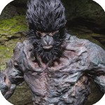
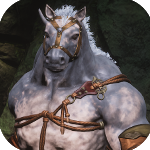
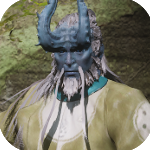
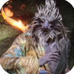
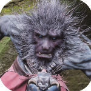

Transformações de Black Myth: Wukong
As Transformações permitem que o Escolhido assuma a forma de criaturas poderosas derrotadas ao longo da jornada. Cada forma fornece vantagens únicas como imunidades, efeitos elementais e ataques especiais.

Domo Azul
Raridade: Épico
Efeito: Transforma o usuário em um macaco de pedra com alta resistência e redução de efeitos negativos.
Poeira Azul
Raridade: Lendária
Efeito: Torna o usuário imune às Quatro Maldições e aumenta drasticamente o poder ao ser atingido.

Trovão Negro
Raridade: Lendária
Efeito: Concede forma equina imune ao trovão, capaz de aplicar Maldição do Trovão.

Fluxo de Ébano
Raridade: Mítico
Efeito: Concede forma do Tigre Yin, permitindo contra-ataques devastadores e deslocamento veloz.

Lado Bom
Raridade: Lendária
Efeito: Transforma o usuário em Yellow Loong, imune ao choque e com visão aprimorada.

Geada
Raridade: Lendária
Efeito: Concede forma do Monge do Mar, atacando com gelo e aplicando Congelamento rapidamente.

Marés Vermelhas
Raridade: Épica
Efeito: Transforma o usuário em um guai-lobo com ataques rápidos que causam Queimadura.

Abismo Umbral
Raridade: Mítico
Efeito: Dá forma ao Chefe Macaco, imune ao gelo e capaz de liberar Maldição do Gelo.
Granizo Violeta
Raridade: Lendária
Efeito: Torna o usuário um guai-verme imunizado contra venenos, capaz de aplicar Maldição Venenosa.